Ink
Tissue marking dye
A comprehensive, multi-source dataset and visual reference for histopathology artifacts in H&E staining. ArtifactAtlas showcases examples of the most common 11 types of artifacts from 5 critical workflow stages - from grossing to digital scanning. Use our browser to explore 330 examples of the characteristic morphology, etiology, and diagnostic impact of physical disruptions, contaminants, and digital errors.

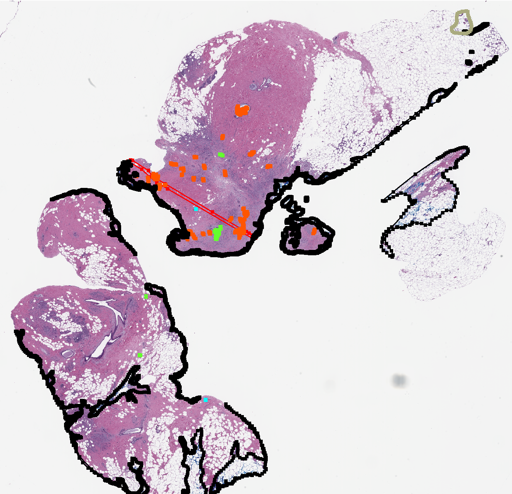
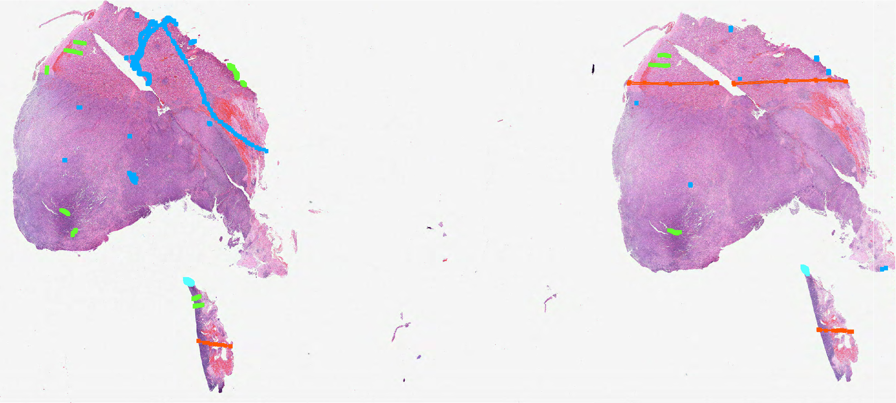
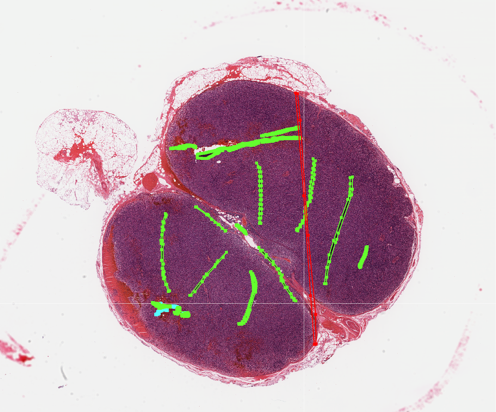
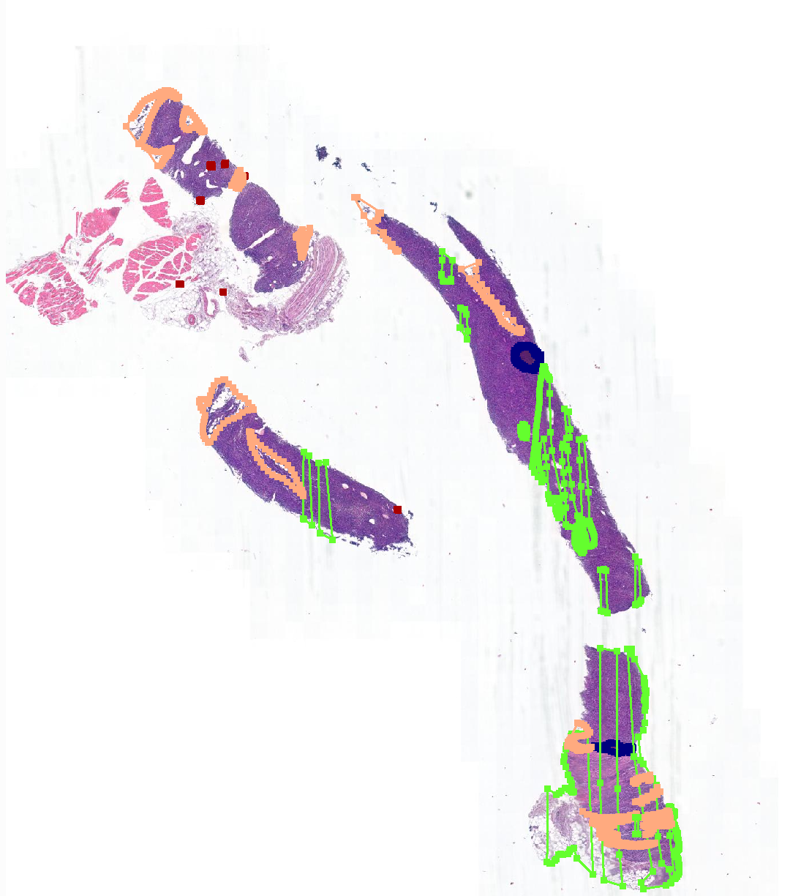
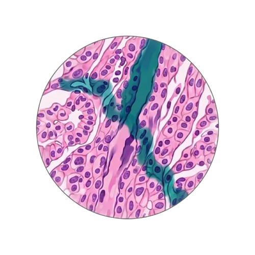
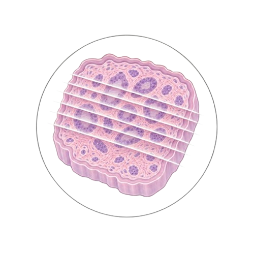
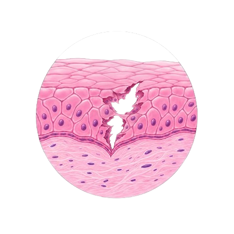
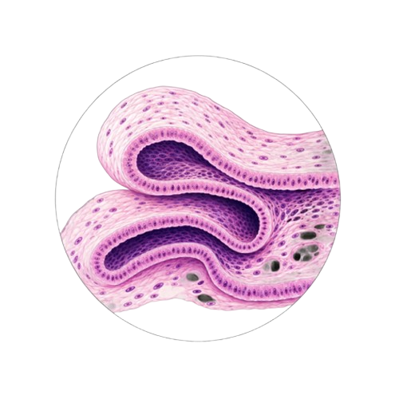
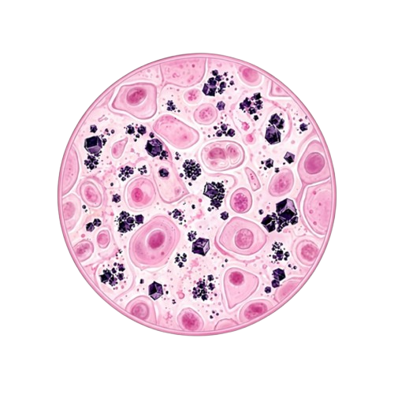
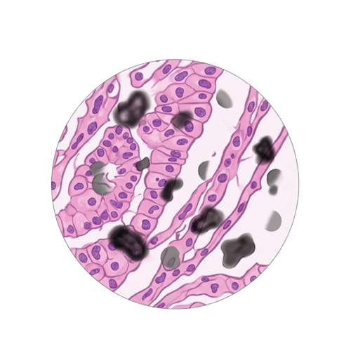
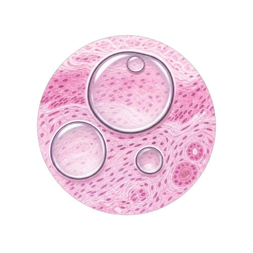
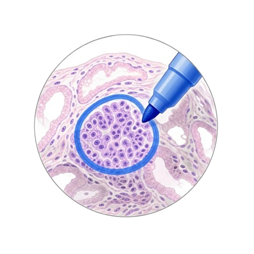
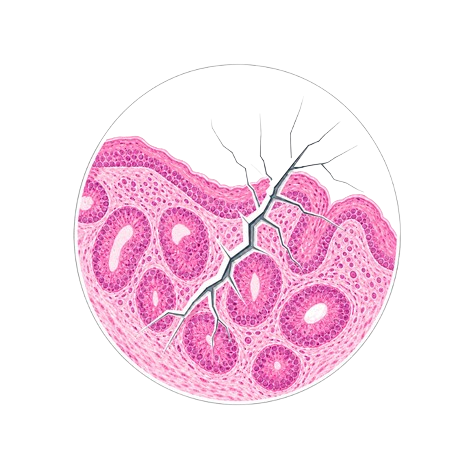